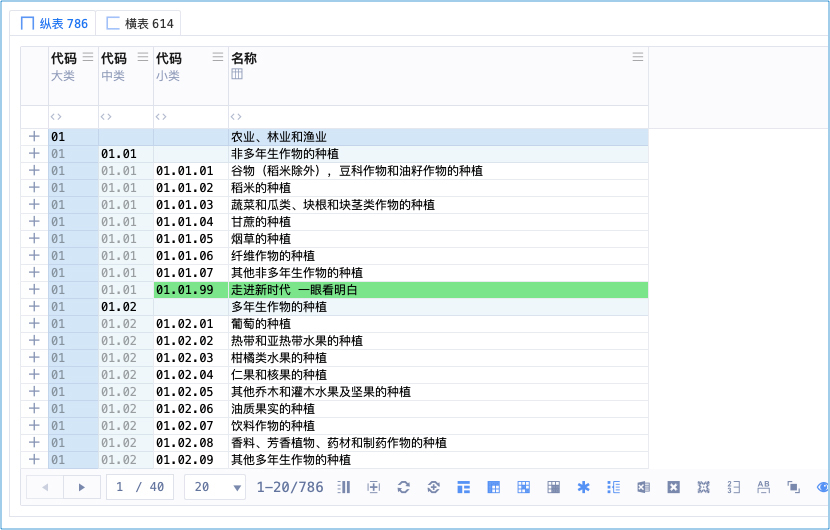
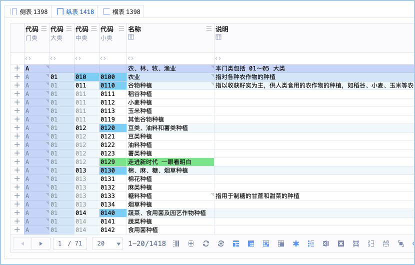
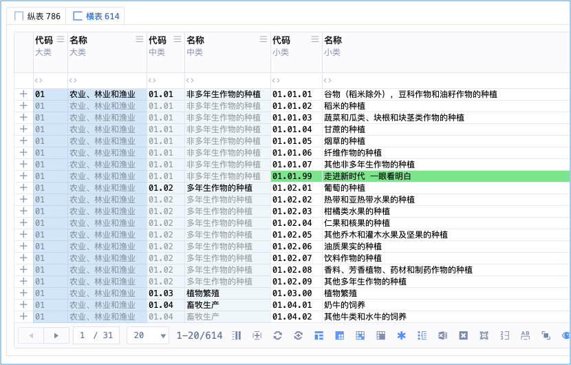
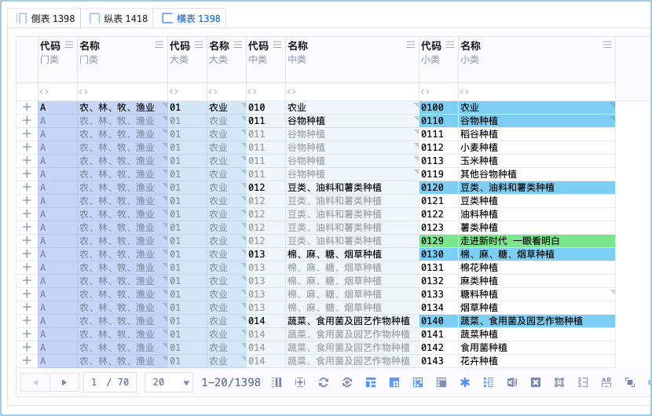
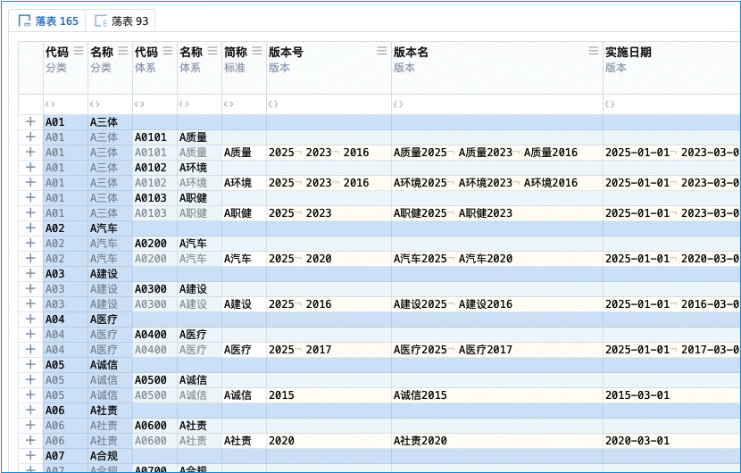
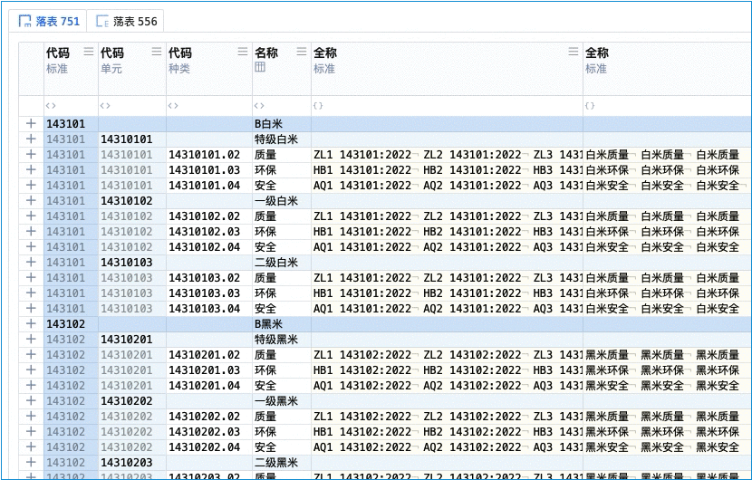
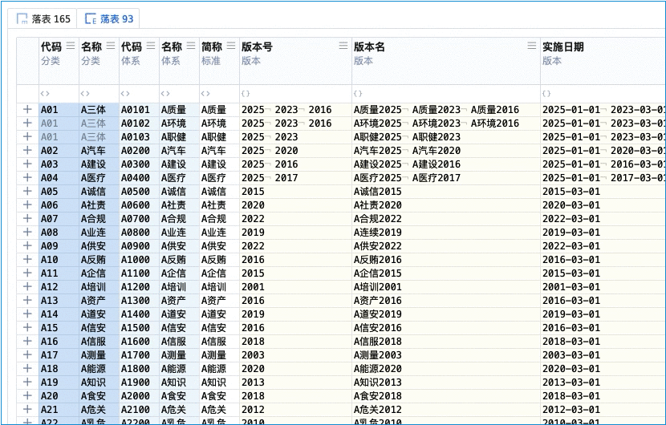
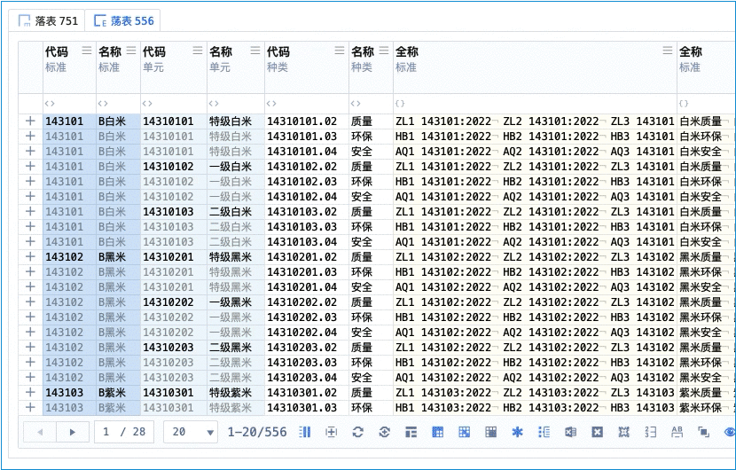
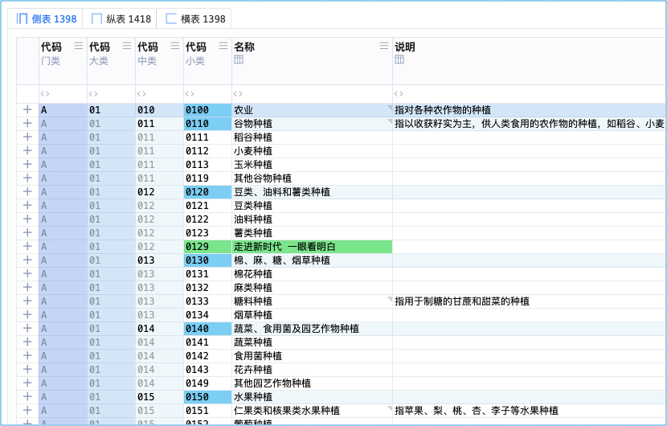

扶摇九剑
简称：九剑
诗
《扶摇九剑》
扶摇直上九剑飞，有进无退意不归。
冲破拘束得大妙，纵横宇宙我最威。
总决式
归妹趋无妄，
无妄趋同人，
同人趋大有。
纵剑最高横辅之，
纵剑小雕为落剑，
横剑小雕为荡剑。
纵剑门类转横为侧，
横剑门类转纵为归，
多合集归、余者奇。
纵剑式


横剑式


落剑式


荡剑式


侧剑式

归剑式
待补图
合剑式
待补图
集剑式
待补图
奇剑式
待补图
现实世界
认证机构信息管理系统 中的 「高维」
武侠世界
天下第一剑法
五绝：南扶 · 扶摇子 的 成名绝技
扶摇子于重伤之际，传功于穿越主（审核员东方正美）
自学到什么程度
只需要知道这种高维的表，比以前的一行一行又一行，好太多，就行了
初步的分清纵横落荡就行，其余不用学，总之：高维的直观好看、就行
术语对照
| 武学术语 | 系统术语 | 说明 |
|---|---|---|
| 九剑 | 高维 | 相当于3D影院、直观 |
| 纵剑式 | 纵表 | |
| 横剑式 | 横表 | |
| 落剑式 | 落表 | |
| 荡剑式 | 荡表 | |
| 侧剑式 | 侧表 | |
| 归剑式 | 归表 | |
| 合剑式 | 合表 | |
| 集剑式 | 集表 | |
| 奇剑式 | 奇表 |
作者笔记
第一剑：纵剑式 - 纵表
第二剑：横剑式 - 横表
第三剑：落剑式 - 落表
第四剑：荡剑式 - 荡表
第五剑：侧剑式 - 侧表
第六剑：归剑式 - 归表
第七剑：合剑式 - 合表
第八剑：集剑式 - 集表
第九剑：奇剑式 - 奇表
主要就是：纵、横、落、荡，其余看看就行，不必执着
纵横是最基础的剑招
纵 x 小类雕栏 = 落
横 x 小类雕栏 = 荡
落、荡的命名由来：
小类雕栏像花一样
落的命名逻辑：数据如水、纵向的水，所以引申出雨水，落下成花，所以叫：落
荡的命名逻辑：数据如水、横向的水，所以引申出海水，激荡成花，所以叫：荡
落、荡由此得名
要你一夜学会，恐怕有点强人所难
你学不学得成，那就看你的悟性了